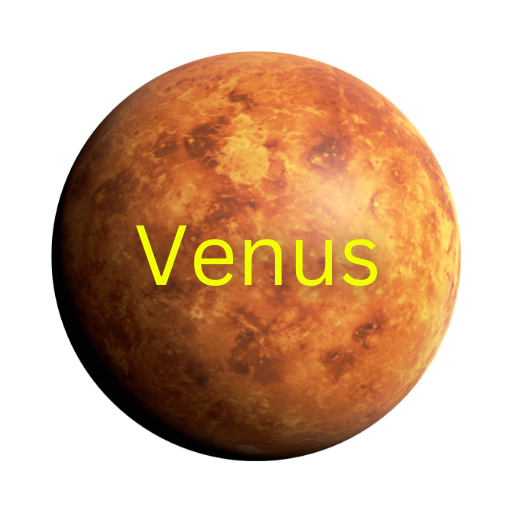

Venus, often called Earth’s “sister planet” due to its similar size and composition, is the second planet from the Sun and the hottest in the solar system. Its thick, toxic atmosphere is composed mostly of carbon dioxide, with clouds of sulfuric acid, creating a runaway greenhouse effect that traps heat and raises surface temperatures to around 900°F (475°C)—hot enough to melt lead. The planet's surface is rocky and marked by vast plains, volcanic features, and mountain ranges, though it remains hidden beneath dense clouds. Venus rotates very slowly and in the opposite direction of most planets, meaning a day on Venus lasts longer than its year—243 Earth days to complete one rotation, but only 225 Earth days to orbit the Sun. Despite its harsh conditions, Venus shines brightly in Earth’s sky, earning it the nicknames "Morning Star" and "Evening Star."